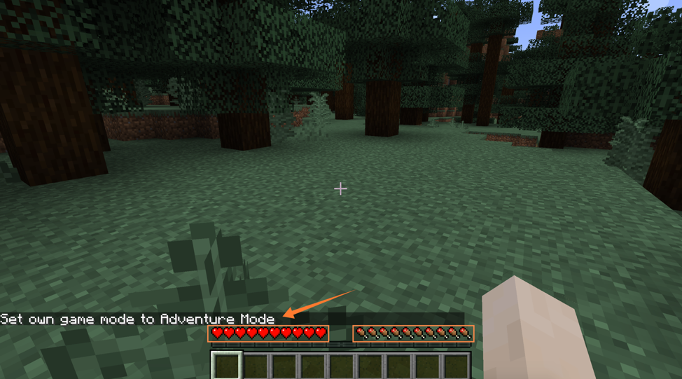
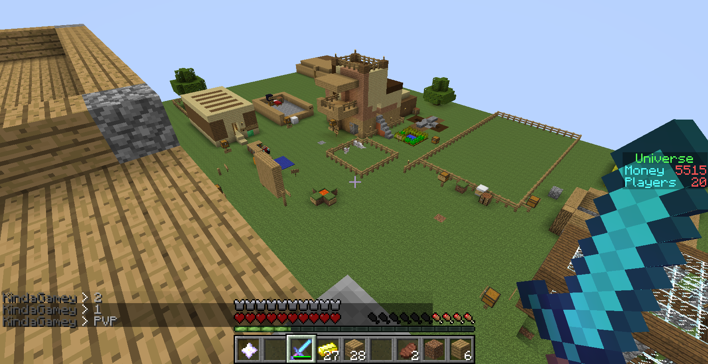
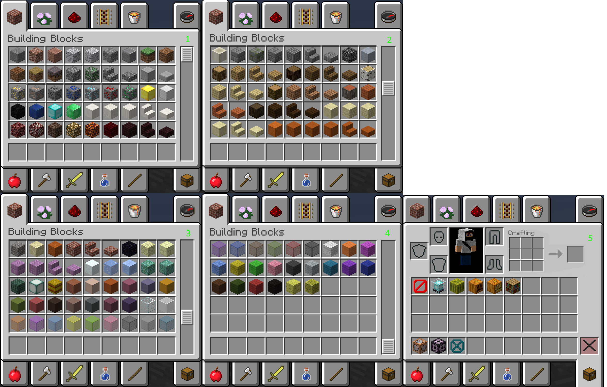

Режим Приключения (англ. Adventure), ранее известный как Dungeons and Levers — это игровой режим, предназначенный для создателей карт на прохождение, ограничивающий игровой процесс, чтобы избежать порчи карт на прохождение или гриферства на серверах. В этом режиме невозможно разрушать и устанавливать блоки, однако игроки по-прежнему могут взаимодействовать с мобами и предметами крафта.
Хардкор (англ. Hardcore) — это эксклюзивный для Java Edition вариант выживания и один из основных режимов игры в Minecraft. В этом режиме мир заблокирован на сложности «Сложно», и игрок не может возродиться после смерти.
.png)
Выживание (англ. Survival) — один из игровых режимов в Minecraft, целью которого является сбор ресурсов, постройка сооружений, убийство мобов и исследование окружающего мира.
Творческий режим (англ. Creative) — один из нескольких игровых режимов в Minecraft, в котором убраны аспекты выживания. В инвентаре Творчества есть все необходимые для строительства блоки в неограниченном количестве, причём блоки уничтожаются с одного удара. Благодаря этому, игроки могут с лёгкостью создавать и разрушать огромные механизмы и строения: замки, дороги, фонтаны и т. д. — но этим возможности не ограничены.
